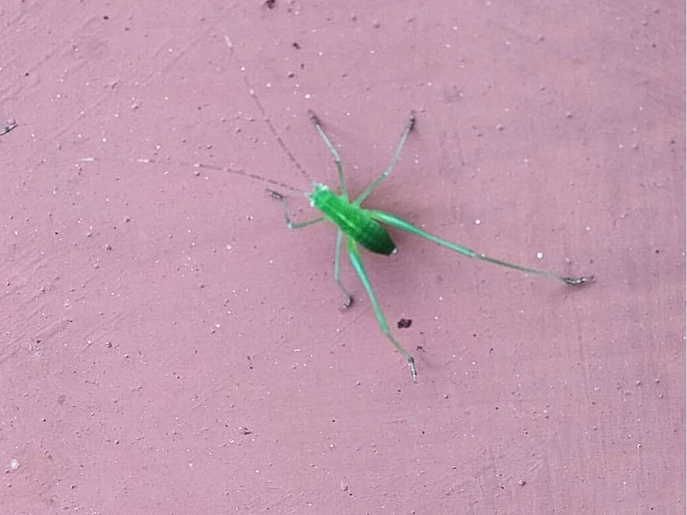

Leptophyes punctatissima
Common Names: Speckled Bush Cricket, Dotted Bush Cricket
Local Name: புள்ளி வெட்டுக்கிளி
Family: Tettigoniidae
Order: Orthoptera
Size: 8–12 mm
Activity: Nocturnal
| Appearance | Small, compact cricket with bright green body covered in fine brown/reddish speckles; wings folded tent-like over back |
| Colour | Bright green with brown/reddish speckles; females have a curved ovipositor |
| Distinguishing Features | Very long antennae; speckled pattern; compressed body; females have a distinctive curved ovipositor |
| Sound | Males produce a soft, high-pitched chirping (stridulation) at night; often heard before seen |
| Habitat | Orchards, gardens, shrublands, hedgerows, grasslands; prefers dense vegetation and leaf litter |
| Behaviour | Nocturnal; excellent jumpers; males chirp to attract females; solitary or in small groups |
| Diet | Omnivorous — leaves, flowers, seeds, small insects, decaying plant matter; occasionally nibbles soft fruit |
| Seasonal Presence | Adults present June–October; overwinters as eggs in soil or plant stems |
| Egg Stage | Eggs laid in soil or plant stems; overwinter; hatch in spring |
| Nymph Stage | 6–7 instars over 2–3 months; nymphs resemble small adults |
| Adult Stage | 2–3 months; 1 generation per year |
| Impact Type | Neutral — minimal impact on orchard crops |
| Benefit | Food source for birds, lizards, and spiders; contributes to biodiversity |
| Ecosystem Role | Presence indicates low pesticide use and healthy orchard ecosystem |
| Pest Classification | Not a significant pest; neutral orchard inhabitant |
| Danger to Humans | None — completely harmless |
| Invasive Status | Native species; not invasive |
| How to Encourage | Maintain diverse vegetation; avoid excessive pesticide use; preserve hedgerows and leaf litter |
| Significance | Biodiversity indicator — presence signals a healthy, low-pesticide orchard environment |
Add your field observations here.